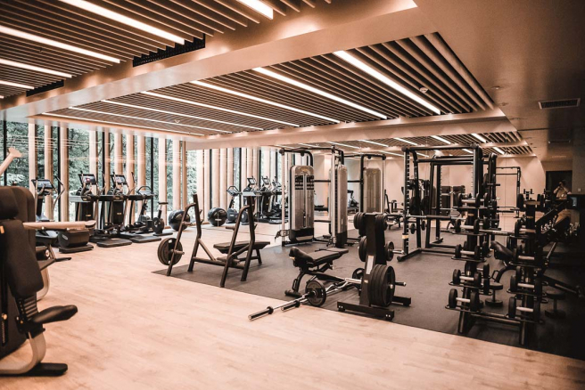
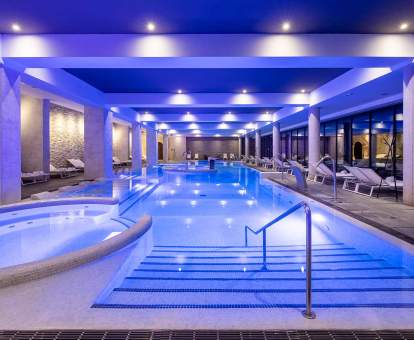

Nos enorgullecemos de disponer un gimnasio altamente equipado para los amantes del ejercicio, con multitud de maquinas a su disposición, que se podra utilizar por todos los residentes del hotel sin coste adicional con un horario de 8:00 am a 21:00 pm.
A disposición de los residentes, podrán encontrar una piscina climatizada en el interior del hotel, con una temperatura óptima durante todo el año.
En Royal Madrid, encontrarás el destino gastronómico emblemático que fusiona la tradición culinaria española con la elegancia y el lujo en el corazón de la capital. Sumérgete en una experiencia culinaria única donde cada plato cuenta la rica historia de Madrid y celebra la autenticidad de la cocina española.
Página creada por: Iván Llaguno.